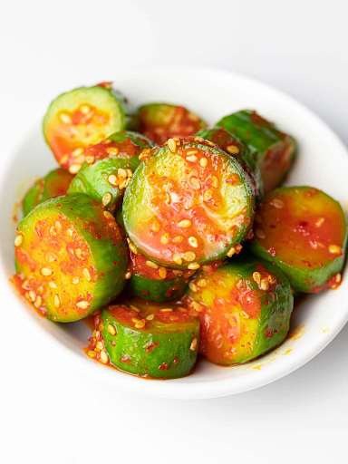

Korean Cucumbers
from Korea

Ingredients:
- 1 1/2 - 2 cloves of garlic
- 1/4 cup of a medium-sized onion
- 2 cup of white vinegar
- 2 tsp salt
- 1/2 tsp of red pepper flakes
- 1 cucumber
- 2 tsp sesame oil
- 4.5 tbsp honey
Instructions:
- Chop the garlic and onions (small and thin) and place in a bowl
- Add pepper flakes
- Add vinegar
- Put in the salt, sesame oil, and honey in the bowl and cover it.
- Chop the cucumber as thin as possible, halving the whole cucumber parallel to the longest side.
- Mix, and season to taste!